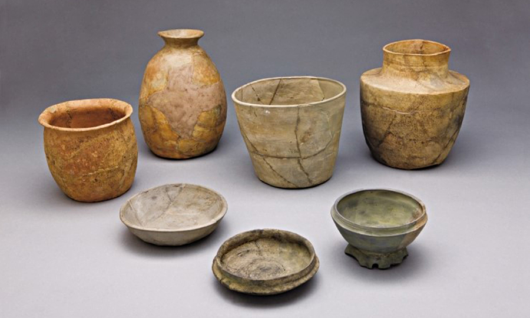
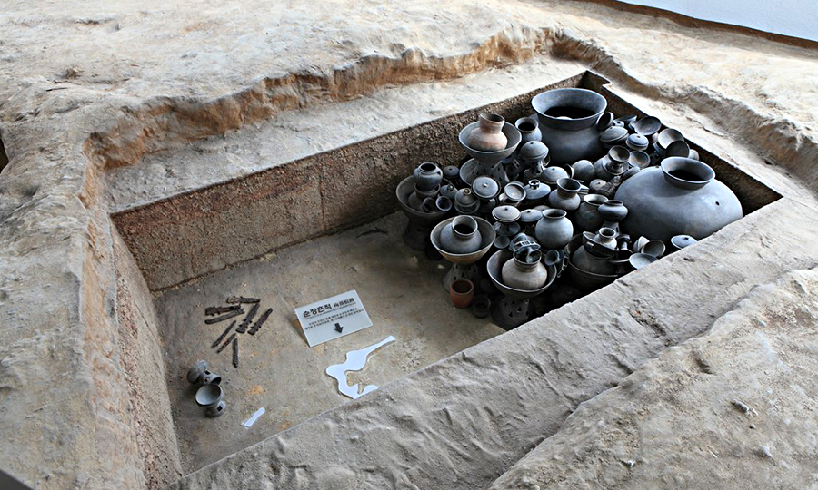
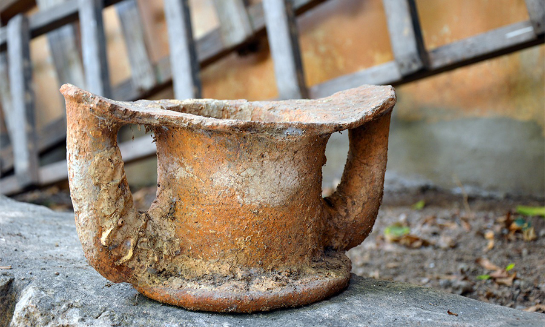
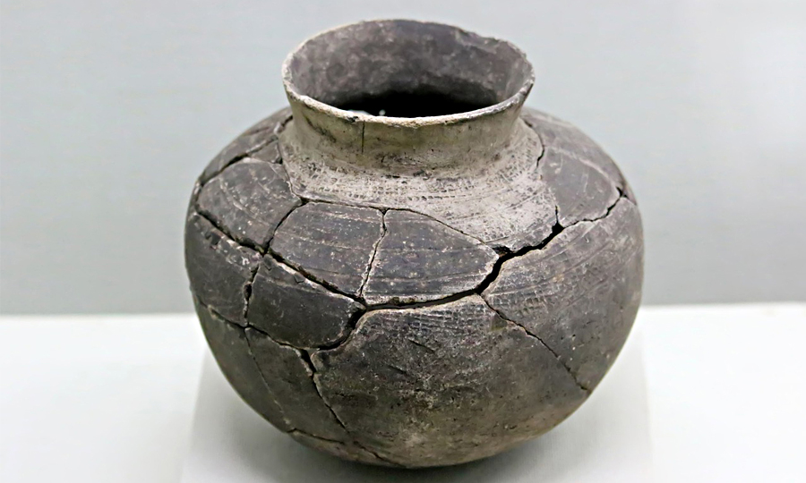

이용안내
관람안내
시설안내
질문과 답변
찾아오시는 길
전시안내
소개
제1전시실
제2전시실
고분공원
- 복천동 고분군
- 야외전시관
특별전시
교육/행사
일정 안내
신청 확인/취소
교육자료
학술연구활동
소장품
유물현황
유물검색
박물관 소개
인사말
연혁
공지사항
자료실
login
전시 안내
전시 안내
이용안내
전시안내
교육/행사
소장품
박물관 소개
홈페이지 가이드
제2전시실
소개
제1전시실
제2전시실
고분공원
특별전시
제2전시
|
제 2전시실
은
복천동고분군에서 출토된 다양한 유물을 장르별로 전시하고,
또 인접지역에서 출토된 유물을 비교 전시하여 복천동고분군의 성격을 볼 수 있다.



